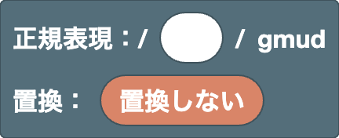

[ ] の中
置換文字列置換の中
ルート
ワークスペースに1つだけある、正規表現と置換をまとめる土台のブロックです。
ルート（正規表現 / 置換）

正規表現と置換を組み立てる土台のブロックです。ワークスペースに常に1つあり、削除できません。
- 正規表現の欄：パターンを入れます。最初はテキストの欄になっていて、正規表現を直接書けます。 右クリックの「ブロック化」で、書いた正規表現をブロックに変換できます。
- 置換の欄：「置換しない」のままにすると、結果欄でマッチした部分がハイライトされます。 置換のブロックをつなぐと、置換した結果が表示されます。
フラグは gmud で固定です。
g（global）：最初の1つだけでなく、マッチする部分をすべて探しますm（multiline）：^と$が、文字列全体の先頭・末尾だけでなく、各行の先頭・末尾にもマッチしますu（unicode）：絵文字なども1文字として扱い、\p{...}が使えるようになりますd（hasIndices）：グループごとのマッチ位置も記録します（結果欄の表示には影響しません）
使用例
- 正規表現
5、置換6→1525が1626になる（マッチした部分がすべて置き換わる）
位置
文字ではなく「位置」にマッチするブロックです。マッチする部分の長さは0文字で、ほかのブロックと組み合わせて、どこでマッチさせるかを指定します。
行頭（^）

行の先頭の位置を表します。文字にはマッチせず、位置だけを表します。
このエディターは m フラグが付いているので、文字列全体の先頭だけでなく、各行の先頭にもマッチします。
使用例
^a→aaa（先頭の a だけにマッチ）
行末（$）

行の末尾の位置を表します。文字にはマッチせず、位置だけを表します。
このエディターは m フラグが付いているので、文字列全体の末尾だけでなく、各行の末尾にもマッチします。
使用例
a$→aaa（末尾の a だけにマッチ）
単語境界（\b / \B）

単語の境目の位置を表します。
ドロップダウンで種類を選びます。
\b：単語の境目。\wの文字（英数字と_）と、それ以外の文字（または文字列の端）の間\B：単語の境目ではない位置
使用例
\bcat\b→cat concat（単語としての cat だけにマッチ）
注意
\w は英数字と _ だけなので、ひらがなや漢字は単語の文字として扱われません。
日本語の文の中では、思った位置で境目にならないことがあります。
先読み・後読み（(?=) / (?!) / (?<=) / (?<!)）

中のパターンが、その位置の直後（または直前）にあるかどうかを調べます。 位置だけを表すので、中のパターンはマッチ結果に含まれません。
- 1つ目のドロップダウン：空欄で先読み（直後を調べる）、
<で後読み（直前を調べる） - 2つ目のドロップダウン：
=で「ある」、!で「ない」
使用例
\d+(?=円)→100円と200ドル（円が続く数字だけにマッチ）(?<=\$)\d+→$30と30円（$ のあとの数字だけにマッチ）
文字
どんな文字にマッチするかを決めるブロックです。文字クラス [ ] の中でも使えるものには、「文字クラス」のタグが付いています。
文字（自由入力）

入力した文字列が、そのまま正規表現（または置換文字列）の一部になります。 何文字でも入力できます。
使用例
cat→cats and dogs
注意
. * + ? ( [ などの文字は、正規表現として特別な意味を持ちます。
文字そのものにマッチさせたいときは、\. のようにエスケープするか、エスケープ文字のブロックを使います。
任意の1文字（.）

改行以外の、どんな1文字にもマッチします。
使用例
a.c→abc a-c ac
注意
文字クラスの中では使えません（[.] はドットそのものを表すため）。
数字・英数字（\d / \D / \w / \W）

ドロップダウンで種類を選びます。
\d：数字1文字（[0-9]）\D：数字以外の1文字\w：英数字または_の1文字（[A-Za-z0-9_]）\W：英数字と_以外の1文字
使用例
\d+→価格は120円
注意
全角数字（１２３）やひらがな・漢字は、\d や \w に含まれません。
日本語の文字を扱うときは、Unicode 文字プロパティを使います。
空白（\s / \S）

ドロップダウンで種類を選びます。
\s：空白1文字（半角・全角スペース、タブ、改行など）\S：空白以外の1文字
使用例
\S+→foo bar（全角スペースで区切られた2つにマッチ）
Unicode 文字プロパティ（\p{} / \P{}）

文字の種類（Unicode のプロパティ）で1文字を指定します。
- 1つ目のドロップダウン：
pでその種類の文字、Pでその種類以外の文字 - 2つ目のドロップダウン：空欄で一般カテゴリ（文字・数字・記号など）、
Script=で文字体系（ひらがな・漢字など） - 入力欄：プロパティの名前
よく使う名前：
- 一般カテゴリ：
L（文字）、N（数字）、P（句読点）、S（記号） - 文字体系：
Hiragana（ひらがな）、Katakana（カタカナ）、Han（漢字）
使用例
\p{Script=Katakana}+→ひらがなとカタカナ
注意
長音記号 ー は、カタカナ（Katakana）ではなく、どの文字体系にも共通の文字として扱われます。
コーヒー のような言葉にマッチさせたいときは、[\p{Script=Katakana}ー] のように文字クラスに加えます。
外部リンク
-
Unicode 文字クラスエスケープ（MDN）：
\p{}の書き方と、指定できるプロパティの種類（一般カテゴリ、Script=の文字体系、Emojiなどのプロパティ）の説明があります
タブ（\t）

タブ文字1文字を表します。置換文字列に入れると、タブ文字が入ります。
使用例
- 正規表現
,、置換\t→a,bがa⇥b（タブ区切り）になる
改行（\n）

改行文字1文字を表します。置換文字列に入れると、改行が入ります。
使用例
- 正規表現
、、置換、\n→あ、いがあ、⏎い（読点のあとで改行）になる
エスケープ文字（\/ \. \( など）

正規表現で特別な意味を持つ文字を、文字そのものとして扱います。ドロップダウンで文字を選びます。
-
パターン・文字クラス：
/ \ ^ $ ( ) . ? [ ] * { } | +を使えます。-は文字クラスの中でだけ使えます（範囲のa-zと区別するため）。 -
置換文字列：
$以外を使えます（\を除いた文字そのものになります）。$を入れたいときは$$のブロックを使います。
使用例
1\.5→1.5 105（ドットそのものにマッチ）
文字クラス（[ ] / [^ ]）
![[ ] ブロック](../images/blocks/common/char_class.png)
中に入れたものをもとに、1文字にマッチします。入力欄の数は歯車のアイコンで変えられます。
ドロップダウンで種類を選びます。
- 空欄（
[ ]）：中に入れたもののうち、どれか1文字 ^（[^ ]）：中に入れたもの以外の1文字
中に入れられるのは、文字、\d \w、\s、\p{}、タブ、改行、エスケープ文字、範囲（a-z）のブロックです。
右クリックの「外部入力」で、入力欄を縦に並べた形にできます。中身が長くなったときに見やすくなります。
使用例
[aeiou]→hello[^0-9]+→12abc34
範囲（a-z）

文字コードが2つの文字の間にある1文字にマッチします。どちらの欄にも1文字（または \- のようなエスケープ1つ）を入力します。
使用例
[a-f]+→xcafey[ぁ-ん]+→ひらがなカタカナ
注意
範囲は文字コードの順で決まります。[A-z] と書くと、Z と a の間にある [ \ ] ^ _ ` の6文字も含まれてしまいます。
英字だけにしたいときは、A-Z と a-z の2つの範囲を入れて [A-Za-z] にします。
結合・選択
複数のブロックを組み合わせるブロックです。連結は左から順に並べ、選択はどれか1つにマッチさせます。入力欄の数は歯車のアイコンで変えられます。
連結

入れたものを、左から順に並べてつなげます。入力欄の数は歯車のアイコンで変えられます。
右クリックの「外部入力」で、入力欄を縦に並べた形にできます。中身が長くなったときに見やすくなります。
使用例
^と\d+と$を連結 →^\d+$（数字だけの行にマッチ）
選択（|）

入れたもののうち、どれか1つにマッチします。左から順に試して、最初にマッチしたものが使われます。 入力欄の数は歯車のアイコンで変えられます。
右クリックの「外部入力」で、入力欄を縦に並べた形にできます。中身が長くなったときに見やすくなります。
使用例
cat|dog→a cat and a dog
注意
| は前後全体を区切るので、ほかのブロックと連結するときは (?:) で囲みます。
たとえば「a|b」のあとに「c」を連結すると a|bc になり、「a」か「bc」という意味になります。
「a か b」のあとに c、としたいときは (?:a|b)c にします。
グループ化
パターンをまとめたり、マッチした部分を記録（キャプチャ）して後から使ったりするブロックです。記録した部分は、後方参照や置換で使えます。
グループ（キャプチャしない）（(?:)）

中のパターンを1つのまとまりにします。後方参照や置換で使う番号は付きません。
ブロックは自動ではまとまらないので、繰り返しや選択（|）の範囲をまとめたいときに使います。
使用例
(?:ab)+→abababc（ab をまとめて繰り返す）
グループ（キャプチャ）（( )）

中のパターンを1つのまとまりにして、マッチした部分を記録（キャプチャ）します。
記録した部分は、後方参照や、置換の $1 で使えます。
番号は、左から順に（( が出てくる順に）1、2、3…と付きます。名前付きのグループも数に含まれます。
使用例
- 正規表現
(\d+)-(\d+)、置換$2-$1→12-34が34-12になる
名前付きグループ（(?<name>)）

キャプチャするグループに名前を付けます。記録した部分は、名前付き後方参照や、置換の $<name> で使えます。
名前はドロップダウンの「グループ名を作成…」で作ります。英字で始まり、英数字と _ だけが使えます。
使用例
- 正規表現
(?<year>\d{4})年、置換$<year>→2025年が2025になる
後方参照（\1）

番号のグループでキャプチャした文字列と、同じ文字列にマッチします。ドロップダウンでグループの番号を選びます。
使用例
(\w)\1→book（同じ文字が2回続く部分にマッチ）
注意
番号には名前付きのグループも含まれます。また、ドロップダウンの番号は、ワークスペースにあるグループのブロックの数から作られます。 正規表現の欄にテキストで書いたグループは数えられません。
名前付き後方参照（\k<name>）

名前付きグループでキャプチャした文字列と、同じ文字列にマッチします。ドロップダウンでグループの名前を選びます。
使用例
(?<q>["'])\w+\k<q>→"abc" 'def"（同じ引用符で囲まれた部分にマッチ）
繰り返し
繰り返しのブロックは、すぐ前の1つの要素だけを繰り返します。
中に複数の文字を入れると、最後の1文字だけが繰り返されます（abc+ は c だけを繰り返す）。
まとめて繰り返すには (?:) を使います。
注意
繰り返しの中に、さらに繰り返しを入れる（入れ子にする）と、処理がとても重くなることがあります。
たとえば (?:a+)+$ を aaaaaaaaaaaaaaaaaaaaaaaaaaaaab のような「最後でマッチしない」テキストに使うと、試す組み合わせが文字数に対して指数的に増え、ブラウザが固まることがあります。
(?:a+)+ は a+ と同じ意味なので、できるだけ入れ子にしない書き方にします。
0回か1回（?）

中のパターンが、あれば1回、なければ0回でマッチします（あってもなくてもいい）。
ドロップダウンで種類を選びます。
- 空欄（
?）：なるべく1回にしようとします ?（??）：なるべく0回にしようとします
使用例
colou?r→color colour- 正規表現
(\d)?(\d+)、置換[$1][$2]→123が[1][23]になる -
正規表現
(\d)??(\d+)、置換[$1][$2]→123が[][123]になる （??だと1つ目のグループはなるべく何も取らないので、数字はすべて2つ目のグループに入る。 このように??は、後ろの部分も同じ文字を取れるときに違いが出ます）
0回以上・1回以上（* / +）

中のパターンを繰り返します。
- 1つ目のドロップダウン：
*で0回以上、+で1回以上、なるべく多く繰り返します - 2つ目のドロップダウン：
?を選ぶと、なるべく少なく繰り返します（*?+?）
使用例
a+→caaat-
正規表現
<.+?>、置換は空 →<p><b>1</b> + <i>2</i> = 3</p>が1 + 2 = 3になる（タグだけを削除） -
?なしの<.+>だと、最初の<から最後の>までが1つのマッチになり、全部消えてしまう
サンプルの「HTML」で、? を付けたり外したりして違いを試せます。
ちょうどN回（{N}）

中のパターンを、ちょうどN回繰り返します。
使用例
\d{3}→1234567
N回以上（{N,}）

中のパターンを、N回以上繰り返します。
ドロップダウンで種類を選びます。
- 空欄（
{N,}）：なるべく多く繰り返します ?（{N,}?）：なるべく少なく繰り返します
使用例
\d{2,}→1 22 333
N回からM回（{N,M}）

中のパターンを、N回以上M回以下繰り返します。M には N より小さい数を入れられません。
ドロップダウンで種類を選びます。
- 空欄（
{N,M}）：なるべく多く繰り返します ?（{N,M}?）：なるべく少なく繰り返します
使用例
\d{2,3}→12345
置換
置換のブロックは、ルートの置換の欄につなぎます。 置換文字列には、文字、タブ、改行、エスケープ文字のブロックも使えます。
置換の連結

置換文字列の中で、入れたものを左から順に並べてつなげます。入力欄の数は歯車のアイコンで変えられます。
右クリックの「外部入力」で、入力欄を縦に並べた形にできます。中身が長くなったときに見やすくなります。
使用例
[と$&と]を連結 → 置換文字列[$&]になり、正規表現\d+ならa1がa[1]になる
$ そのもの（$$）

置換文字列に $ の文字を入れます。置換文字列では $ が特別な意味を持つので、$ そのものは $$ と書きます。
使用例
- 正規表現
\d+、置換$$$&→100が$100になる
マッチした部分（$&）

マッチした部分の文字列そのものを入れます。
使用例
- 正規表現
\d+、置換($&)→a1 b22がa(1) b(22)になる
マッチより前（$`）

対象テキストのうち、マッチした部分より前の文字列をすべて入れます。
使用例
- 正規表現
=、置換=$`→a=がa=aになる
マッチより後ろ（$'）

対象テキストのうち、マッチした部分より後ろの文字列をすべて入れます。
使用例
- 正規表現
=、置換$'=→=bがb=bになる
グループの参照（$1）

番号のグループでキャプチャした文字列を入れます。ドロップダウンでグループの番号を選びます。
使用例
- 正規表現
(\d+)-(\d+)、置換$2-$1→12-34が34-12になる
注意
番号には名前付きのグループも含まれます。また、ドロップダウンの番号は、ワークスペースにあるグループのブロックの数から作られます。 正規表現の欄にテキストで書いたグループは数えられません。
名前付きグループの参照（$<name>）

名前付きグループでキャプチャした文字列を入れます。ドロップダウンでグループの名前を選びます。
使用例
- 正規表現
(?<year>\d{4})年、置換$<year>→2025年が2025になる